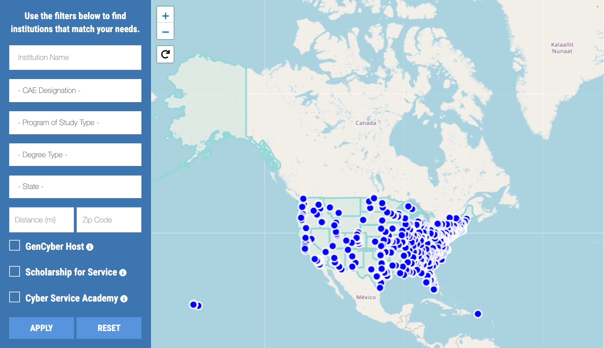

Cybersecurity Career Awareness Exploration
See how your interests in technology, puzzles, and helping others can become an in-demand, well-paid cybersecurity career in any industry.
Initialize ExplorerQuick Start Guide
Short on time? Choose a pathway below to jump straight to the most relevant sections for your exploration.
Introduction to Cybersecurity Careers
Why the World Needs Students
What is cybersecurity?
Cybersecurity is the art of protecting information, information systems, networks, devices, and data from unauthorized access, damage, or misuse.
Cybersecurity professionals make sure that the data and systems we rely on every day remain safe, accurate, and available when people need them.
"Cybersecurity is like digital safety and security. Just like we lock doors and protect valuables in the physical world, cybersecurity pros lock down data and systems in the digital world so people and organizations can trust and use them."
The three big goals of cybersecurity (CIA)
Hover over circles for definitions
"Do I Belong in Cyber?" (Myth vs. Reality)
Many students count themselves out of cybersecurity before they even start because they don't think they fit the "mold." Hover over the cards below to bust the most common myths.
Cyber needs communicators, policy writers, and creative thinkers. Many critical roles involve zero coding or advanced math.
The industry thrives on diversity. Unique perspectives from diverse backgrounds are exactly what's needed to outsmart creative attacks.
Technical skills can be taught. Curiosity, perseverance, and a willingness to learn are the true prerequisites for success in this field.
“Cyber in My Day” Personal Selector
Select the sectors you use personally (gaming, banking, school, etc.). Cybersecurity isn't only for big tech companies; it touches almost everything you do.
My First Cyber Role Snapshot
Browse these common roles and pick one that looks interesting to analyze.
Selected Role
Pro Tip: Use CYBER.ORG Career Profiles to help answer these questions.
Local Demand Check: Just Me and My Region
Use CyberSeek's Interactive Map to view demand in your state or nearest metro area.
Why Choose a Career in Cybersecurity?
Cybersecurity offers students a chance to learn constantly, earn a strong income, and protect people, organizations, and even the country.
Protect the systems communities rely on daily.
Defend sensitive data and critical infrastructure.
Enter a growing field with persistent talent shortages.
Earn above-average compensation and benefits.
Solve puzzles and continuously learn new tech.
Service to Others: Making a Real Difference
A career in cybersecurity goes beyond personal gain—it is about service.
Cybersecurity professionals safeguard data and digital systems that keep communities running, from small businesses and schools to hospitals and local government services.
By protecting people's information and the systems they rely on, cyber professionals help families, friends, and neighbors stay safe in an increasingly connected world.
If you care about helping people and keeping them safe, cybersecurity lets you protect entire communities—not just one person at a time.
Serving National Interests
At the highest level, cybersecurity experts contribute to national security.
They help protect a nation's sensitive information and critical infrastructure, including energy systems, transportation networks, and defense operations.
For students interested in public service or patriotic careers, cybersecurity offers roles in government agencies, military organizations, and other public institutions.
If you are interested in military, law enforcement, or public service, check out cyber roles in K-12, the Department of Defense, intelligence agencies, and government.
Opportunities Abound
Cybersecurity faces a shortage of skilled professionals, and that shortage is expected to continue.
Because of this gap, students who gain cybersecurity skills can expect abundant job opportunities and a relatively secure career path.
Cyber roles exist at many levels—from technician and analyst positions requiring certificates or associate degrees to advanced roles that build on bachelor's and graduate education.
Use local data from the CyberSeek Heat Map (Section 1) to see that there are real openings in your state and nearby metro areas.
Rewarding Compensation
Because cybersecurity skills are in high demand and require specialized knowledge, many cyber careers offer excellent salaries and benefits.
Across a wide range of roles, cybersecurity professionals often earn compensation that is above the average for many other occupations.
As students gain experience and additional credentials, their earning potential and advancement opportunities typically increase.
Cybersecurity can offer both meaningful work and strong financial stability, especially when combined with the right education and certifications.
Diverse, Dynamic Work
Cybersecurity offers dynamic, non-monotonous work that frequently involves problem-solving, critical thinking, and teamwork.
The threat landscape is constantly changing, which means cyber professionals must continually learn new tools, techniques, and technologies.
This makes cybersecurity a strong fit for students who enjoy challenges, creativity, and innovation rather than doing the same task day after day.
If you get bored easily or like a challenge, consider cyber career paths! You'll enjoy ongoing learning and variety.
"What Matters Most to Me?" Personal Values Ranker
Adjust the sliders to rank what you value most in a future career.
Adjust the sliders to see how your values align with specific cybersecurity roles and environments.
"Is Cyber for Me?" Solo Self-Check
Answer these four quick questions honestly to get a personalized recommendation on your next steps.
1. Do you like solving puzzles, mysteries, or problems where you have to figure out what went wrong?
2. Do you care about keeping people safe, protecting fairness, or defending things that matter to your community?
3. Are you interested in technology—computers, apps, networks, or games—even if you don't know much about how they work yet?
4. Would you like a career where you can keep learning new things over time and not do the exact same task every day?
"My Why for Cyber" Reflection
In 2–4 sentences, explain why cybersecurity might matter to you, your family, or your community.
Structuring the Workforce
Civilian (NICE) vs. Military (DCWF) Frameworks
NICE Framework
NIST SP 800-181
- Scope: National (Public, Private, Academic)
- Status: Voluntary Standard / Reference
- Focus: Common Lexicon (5 Categories*)
*Simplified model based on core functions.
Visit Official SiteDCWF Framework
DoD Manual 8140.03
- Scope: Dept of Defense (Military/Civ/Ctr)
- Status: Mandatory Qualification
- Focus: Assigns Specific Codes (e.g., 411)
"Civilian or Military?" Personal Scenario Sort
Assign each scenario to the environment you think fits best: Civilian (NICE), Military/DoD (DCWF), or Could be either.
"You are analyzing malware that targeted a local hospital's patient database."
"You are setting up secure communications for a forward-deployed unit overseas."
"You are conducting digital forensics on a laptop confiscated in a federal investigation."
Hospital: Mostly Civilian. While military bases have hospitals, local community hospitals fall under civilian (NICE) guidelines.
Overseas Unit: Military/DoD. This directly supports defense operations, falling strictly under DCWF rules.
Forensics: Could be either. Both civilian law enforcement (like the FBI) and military investigators use digital forensics.
"Which Work Style Sounds Like Me?" Solo Checklist
Check any of the activities below that sound interesting to you. We'll map them to the NICE Framework categories.
NICE Framework Explorer
Explore roles and skills by category.
Select a Category from the left to view specific Job Roles
"One Category, One Role" Mini Deep-Dive
Using the Explorer tool above, select one NICE category that sounded interesting to you. Read through the roles and fill out the reflection below.
Understanding Academic Credentials
Degrees, Certificates, and Career Impact
What Are Academic Credentials?
Academic credentials—such as college certificates and degrees—are formal proof that you have completed education or training in a specific field.
They show that you have earned college credit and developed workforce competencies needed for entry-level employment or further study.
Think of credentials as milestones on your education journey. Each one tells employers what you know and can do.
Types of College Credentials
In cybersecurity and related fields, students most often encounter these levels of credentials. Each step can build on the previous one.
College Certificates (short-term)
Certificates are short programs, usually 12 to 60 college credits, focused on specific skills in high-demand areas like cybersecurity. They can be 'stackable,' meaning students can start with basic skills certificates and progress to more advanced certificates that lead into degrees.
Typical homes: community colleges, technical colleges, some universities.
Associate Degrees
Associate degrees (often AA, AS, or AAS) are typically 2-year programs that combine general education with technical courses. In cybersecurity, associate degrees can prepare students for entry-level technician or analyst roles or for transfer into bachelor's programs.
Bachelor's Degrees
A bachelor's degree is usually a 4-year program (about 120 credits), offering in-depth knowledge and specialization. Common types include: BA, BS, BFA, BAS, BBA, BEng, and BCS, with cybersecurity often housed in BS or BAS programs.
Bachelor's degrees open broad career options and form the foundation for graduate studies.
Master's Degrees
Master's degrees provide advanced knowledge and specialization after a bachelor's degree, usually in 1–2 years full-time or 2–4 years part-time. Common master's degree types include MA, MS, MBA, MEd, MEng, MFA, MPH, and MSW.
In cybersecurity, master's programs can prepare students for leadership, management, and specialized technical roles.
Doctoral Degrees (Advanced Degrees)
Doctoral degrees, such as PhD, DBA, EdD, and EngD, are the highest level of academic credential. They are research-focused programs that often require original research, a dissertation, and several years of full-time study.
Doctoral degrees typically prepare graduates for academic positions, research careers, and high-level leadership roles.
Which Credentials for Which Cyber Roles?
Cybersecurity has room for people at many education levels. Some roles focus on hands-on technical work and can begin with certificates or associate degrees, while others—especially management and research roles—usually require bachelor's or graduate degrees.
Suitable for entry-level roles like cyber technician, help desk with security focus, junior SOC analyst, or support roles under supervision.
Common baseline for employment, engineering, and specialist roles; often preferred by employers for growth potential.
Helpful for advanced technical specialization (e.g., cyber operations, digital forensics) and management tracks.
Relevant for research, teaching at universities, and some high-level leadership or policy roles.
There is no single 'correct' level—what matters is matching the credential to your goals, timeline, and resources.
Majors, Minors, and Cyber
Colleges often group certificates and degrees into majors and minors.
A major is your primary field of study—for example, Cybersecurity, Information Technology, or Computer Science.
A minor is a secondary concentration that may or may not relate to your major and is often chosen later, such as a minor in Cybersecurity, Data Science, or Business.
Minors can help students deepen a cyber focus or combine cybersecurity with another interest (for example, major in Criminal Justice, minor in Cybersecurity).
Think about combinations: You might major in Cybersecurity with a minor in Business, or major in another field and add a cyber minor to stand out.
Admission, Time, and Cost Considerations
Bachelor's Degrees
- Admission Usually require a high school diploma or equivalent, meeting minimum GPA, and sometimes SAT or ACT scores plus application materials.
- Time Typically 4 years full-time; longer if part-time.
- Cost Tuition varies; public in-state tuition has historically averaged around five-figure amounts per year.
Master's Degrees
- Admission Require a completed bachelor's degree and a suitable academic record; some programs require tests or work experience.
- Time Often 1–2 years full-time; 2–4 years part-time.
- Cost Tuition is generally higher than bachelor's degrees; financial aid, scholarships, and employer tuition assistance can offset costs.
Doctoral Programs
- Admission Require strong academic preparation and often research interests or experience.
- Time Commonly 3–7 years full-time.
- Cost Many are partially or fully funded through assistantships or fellowships.
Be sure to compare costs across community colleges, public universities, and private institutions, and consider transfer pathways that can reduce total cost.
How Credentials Affect Jobs and Earnings
Earning a college degree significantly improves employment chances and income over a lifetime.
Analyses of millions of students show that a bachelor's degree is associated with lower unemployment and substantially higher lifetime earnings compared to only a high school diploma.
Public universities, in particular, have been shown to provide strong economic mobility for many students.
Education is an investment. In cybersecurity, pairing the right credential with in-demand skills can pay off over an entire career.
Earning Potential Over Time
Build My Own Education Ladder
Map out your educational journey. Select an option for each stage to see your personalized pathway.
My path could be: (Select options above to build your ladder)
Find Cyber Credentials I Could Actually Attend
Search college websites, transfer guides, or CAE program lists to find realistic options. Record two specific credentials below, then highlight which one is the fastest and which sounds the most interesting.
Role-Level Reality Check
Match the cybersecurity role to its minimum typical credential level.
- Technician/Help Desk: Typically requires a Certificate or Associate Degree (plus some industry certs like Security+).
- Security Engineer/Analyst: The most common baseline is a Bachelor's Degree.
- Researcher/CISO: Advanced roles and leadership heavily favor Master's or Doctoral Degrees.
Cybersecurity Majors
Classified Database of Study Programs
What Is a Cybersecurity Major?
A cybersecurity major is a structured college program that focuses on protecting information, systems, networks, and devices from cyber threats.
Cyber-related majors combine technical coursework with topics such as risk management, law and policy, digital forensics, and secure system design.
Cybersecurity content can appear under different program names depending on the college (for example, 'Cybersecurity,' 'Information Assurance,' 'Information Technology – Security,' or 'Computer Science with a Cybersecurity concentration').
Look beyond just the title—review the course list to see how much security content is actually included.
Types of Academic Cybersecurity Programs
Cybersecurity / Cyber Defense
Focus: Defending systems and networks, monitoring for threats, responding to incidents.
Credentials: AAS/AS in Cybersecurity or Cyber Defense at community colleges; BS in Cybersecurity at universities.
Example roles: Security Operations Center (SOC) Analyst, Information Security Analyst, Cybersecurity Technician.
Information Technology (IT) with Security
Focus: Broader IT skills (networking, systems administration, cloud) with several security courses.
Credentials: Certificates and associate degrees at community colleges; BS in IT with a Security concentration.
Example roles: Network Administrator, Systems Administrator, IT Support Technician with security responsibilities.
Information Assurance / GRC
Focus: Protecting information through policy, risk management, compliance, and governance.
Credentials: BS or BAS in Information Assurance / Cybersecurity Management; sometimes graduate programs.
Example roles: Governance, Risk, and Compliance (GRC) Analyst; Information Security Auditor; Policy Analyst.
CS / Software Eng with Security
Focus: Designing and building software and systems, with added emphasis on secure coding and application security.
Credentials: BS in Computer Science or Software Engineering with a Cybersecurity concentration or minor.
Example roles: Software Developer with security focus; Application Security Engineer; DevSecOps Engineer.
Digital Forensics / Cyber Crime
Focus: Investigating cyber incidents, collecting and analyzing digital evidence, supporting legal or disciplinary processes.
Credentials: AAS/AS in Digital Forensics at community colleges; BS in Digital Forensics or Cyber Crime at universities.
Example roles: Digital Forensics Technician, Cyber Crime Analyst, Incident Response Specialist.
Some institutions combine these areas into one degree with multiple tracks or concentrations. Read the 'tracks' or 'concentration' options carefully.
"Which Cyber Major Fits Me?" Personal Selector
Choose the activities you enjoy most to see which cybersecurity majors align with your interests.
My Starting Point Decision
You can begin your cybersecurity education at different types of institutions. Think about what fits your life best.
"Compare Two Programs for Me"
Pick two real programs (e.g., local CC vs nearby University) and check off what they offer to see how they stack up.
Industry Certifications
The "Big Five" Certification Bodies
What Are Cybersecurity Industry Certifications?
Industry certifications are credentials you earn by passing exams and, in many cases, gaining hands-on experience.
They show employers that an independent organization has verified your knowledge and skills in specific areas of cybersecurity or information technology.
- Distinction: Certifications can set you apart from others competing for the same job, especially early in your career when you have limited work experience.
- Advancement: Earning certifications can support promotions or new responsibilities and may be associated with salary increases.
- Credibility: Certifications provide credibility because your expertise has been tested and validated by a recognized body, not just claimed on a resume.
Certifications are most powerful when paired with education, projects, and hands-on practice—not as a standalone shortcut.
Are Certifications Worth It?
Certifications are worth the time and effort when they are chosen carefully and combined with education and experience.
They can:
- Improve your chances of being selected when competing with similarly qualified candidates.
- Demonstrate perseverance and commitment to your career.
- Provide independent validation of your knowledge and skills.
If you have limited work experience, certifications can help show employers you are serious and have mastered specific tools. Focus on a small number of well-chosen certifications that align with your path, rather than chasing every cert.
Major Cybersecurity Certification Organizations
CompTIA
Widely recognized vendor-neutral IT certifications that form the foundation for many careers.
- • ITF+ (Basics)
- • A+ (Support)
- • Network+
- • Security+
- • CySA+
- • CASP+
ISC2
Leading professional organization known for its high-level cybersecurity certifications.
- • CC (Foundational)
- • SSCP (Operations)
- • CISSP (Advanced)
EC-Council
Certifications focused on specific security roles, often using job-title language.
- • CEH (Ethical Hacker)
- • CND (Network Def)
GIAC / SANS
Tied to SANS training, with strong recognition among employers and government agencies.
- • GSEC (Essentials)
- • GCFA (Forensics)
ISACA
Focuses heavily on audit, governance, and management certifications.
- • CISA (Auditor)
- • CISM (Manager)
When you see unfamiliar acronyms, use this section to review what each organization is known for and which ones are most relevant to your goals.
Certification Levels: Where to Start and Where to Grow
Entry / Foundational
Late high school (in programs with strong support), community college students, early university students, or early-career professionals.
Intermediate
After some coursework and/or early work experience—often CC grads, junior analysts, or bachelor's students near completion.
Advanced / Expert
Mid-career professionals with years of experience, often in senior or leadership roles.
Keep in mind that many 'famous' certifications (like CISSP, CISM, CEH) have experience requirements and are long-term goals, not first steps.
Explore the Certification Roadmap
The cybersecurity certification landscape can be complex. The 'Security Certification Roadmap' helps visualize how different certifications fit together by domain and difficulty level.
You can explore an interactive version of this roadmap on GitHub, which lets you filter certifications by category and skill level.
- There are many different security domains (networking, forensics, risk, cloud, etc.).
- Certifications range from beginner to advanced.
- Focus first on the beginner and foundational certs in domains that match your interests and career goals.
"Is a Certification a Near-Term Goal for Me?" Personal Readiness Check
Answer these quick questions about your current coursework and hands-on experience to see if a certification should be an immediate focus.
"My Personal Certification Roadmap Snapshot"
Choose up to two certifications per timeline column. Keep in mind that advanced certs require years of verified on-the-job experience!
"Who Offers Which Cert?" Solo Match
Drag the certification acronyms into the box of the organization that offers them. (Or tap a cert, then tap a box!)
Certification Explorer Tool
To successfully navigate the complex ecosystem of cybersecurity credentials, use this interactive explorer. By categorizing exams across distinct difficulty tiers and domains, this tool allows you to systematically scaffold your credentials. Filter by Difficulty Level, Knowledge Domain, and Vendor to map the exact certifications you need to transition from a beginner to an expert in your chosen pathway.
Scholarships
Funding Your Education
More Than Just Money
Cybersecurity scholarships often come with powerful career accelerators that standard financial aid does not offer.
Many federal programs, like the CyberCorps® SFS and the DoD Cyber Scholarship Program (DoD CySP), include guaranteed internships and full-time employment after graduation. They don't just pay for your degree—they directly launch your career.
Look at the 'strings attached' as a benefit. A service requirement means you don't have to job-hunt after graduation.
Explore Cybersecurity Scholarships
Browse the directory below to find national programs, organizational grants, and specific demographic scholarships designed to fund your cybersecurity education.
Activity: Find & Align with a Scholarship
Use the directory above to find one scholarship you could actually apply for, then build your strategy below.
"Funding My Path" Personal View
Map these funding supports to when you might use them. Select "Now (HS/Early College)" or "Later (University/Grad)".
What is one thing you can do this month? (e.g., "Ask my counselor about dual-credit", "Set a calendar reminder for the ISC2 deadline")
Establishing a Cybersecurity Career Pathway
Build Your Personalized Plan
What Are Career Pathways?
A career pathway is a planned sequence of courses, experiences, and credentials that prepares you for a specific career area—in this case, cybersecurity.
In a pathway, different programs and services are coordinated so you can build academic skills, technical knowledge, and employability skills step by step.
Cybersecurity pathways may include high school classes, dual credit or dual enrollment, college degrees, industry certifications, extracurricular activities, apprenticeships, internships, and early work experience.
A pathway is your roadmap from high school into a cyber job. It shows which classes, certificates, and experiences to do—and in what order.
Career Pathways as a System
Career pathway models are used at federal, state, and local levels to organize resources and funding.
A comprehensive Career Pathways System can serve both youth and adults, promoting collaboration and alignment between education and industry.
Partnerships typically include universities, four-year colleges, community colleges, K-12 schools, government agencies, employers, labor organizations, and social service providers.
- Clearer course sequences with fewer dead ends.
- Fewer repeated courses when transferring between schools.
- Better connection between what you learn and the skills employers need.
- Opportunities to earn college credit while still in high school.
You are not navigating alone—pathways bring multiple K-12 and college institutions together to support you.
Academic Articulated Credit
One of the main goals of career pathways is to let you earn college credit while you are still in high school or while you are in community college before transferring to a four-year institution.
Articulation (or transfer) agreements are formal agreements between schools—such as high schools, community colleges, technical colleges, and universities—about how courses and programs transfer.
These agreements can also be called transfer agreements, transfer guides, or transfer pathways.
- Provide clear checklists or course sequences so you know exactly what to take.
- Reduce repeated or non-transferable courses, saving time and money.
- Help ensure that career-technical programs (like AAS degrees and certificates) can apply toward specific four-year degrees.
Review articulation or transfer guides with your advisor, and follow them closely if you plan to transfer into a four-year cybersecurity or related program.
Earning College Credit on the Way to Cyber Careers
Many cybersecurity pathways begin in high school through opportunities to earn college credit early. These options can speed up your path to a cyber credential and reduce total cost.
| Option | Description | HS Credit | College Credit |
|---|---|---|---|
| Dual Credit | Take a single course that counts for both high school and college credit. | ||
| Dual Enrollment | Enroll directly in a college class while still in high school; it may or may not count toward high school graduation depending on local rules. | Varies | |
| Early College / ECHS | Structured programs where students can earn significant college credit—sometimes up to an associate degree—along with their high school diploma. | ||
| Advanced Placement (AP) | High school courses and exams that can result in college credit or advanced placement when you score well on AP tests. | Exam-based |
Choose dual credit or dual enrollment classes that align with IT/cyber pathways (for example, Intro to IT, networking, programming) when available.
Creating Your Unique Cyber Career Pathway
A personal career pathway plan is your customized roadmap to a cybersecurity career. It connects your strengths, interests, and goals to specific steps you will take.
Use this structured guide to plan your journey; write down each step and revisit it each semester.
Further Tips for Your Journey
Follow cybersecurity news, new technologies, and emerging threats to inform your choices.
Become familiar with tools and topics such as secure communications, AI, virtualization, smart devices, and cloud computing.
Participate in competitions, internships, exchange programs, or student organizations to build experience and motivation.
Build relationships with teachers, advisors, other students, and professionals. Networking can lead to internships and jobs.
Remember that pathways are flexible; you can refine your path as you gain K-12 experience and as the industry evolves.
The CAE Community Map
The National Centers of Academic Excellence in Cybersecurity (NCAE-C) program validates universities with robust cybersecurity curriculums.

"My Cyber Pathway Map" (Solo)
Build your visual roadmap. Fill in the blanks below to create a direct path from where you are now to your future cybersecurity career.
Check the boxes where you currently have at least one concrete step planned:
Bring this completed map to your next advising meeting. It shows exactly what you want to achieve and your next immediate step.
Extra-Curricular Activities
Sharpen Your Skills in the Arena
Why Cyber Extra-Curricular Activities?
Extracurricular activities provide a way to apply classroom learning in real-world contexts and are considered part of a well-rounded education.
For you, they help build critical thinking, problem-solving, and teamwork skills while practicing technical concepts in realistic scenarios.
These activities can also give you concrete experiences to talk about in interviews, scholarship applications, and personal statements.
Classes teach the concepts; clubs and competitions let you practice them and show employers what you can do.
Cybersecurity Clubs
A cybersecurity club is a student-run group that provides outside-of-class activities related to the cybersecurity industry.
Students gain valuable experience that has been shown to be useful during interviews and on the job.
- Hands-on labs and mini-workshops (basic security tools, networking, scripting).
- Practice problems and challenges from competitions like picoCTF or NCL.
- Guest speakers from local industry, law enforcement, or government.
- Preparation sessions for major competitions.
If your school doesn't have a cyber club, talk to a teacher or IT staff member about starting one.
From Activities to Careers
Competitions and clubs let you experience what it is like for organizations to face constant cyber-attacks and respond under pressure.
They help you discover which types of challenges you enjoy most—defensive, offensive, investigative, or analytical.
Participation demonstrates initiative, persistence, and teamwork to colleges, scholarship committees, and employers.
Keep a simple 'experience log' of competitions and club activities so you can describe your contributions in college applications and interviews.
Popular Student Cybersecurity Competitions
Explore these highly regarded competitions designed to challenge your skills, from beginner puzzles to advanced reverse engineering.
"Pick My Next Three Individual Actions"
Select up to three solo-friendly activities to kickstart your experience, and set a personal target date for each.
"Experience Log - My Activities Only"
Maintain a private log of any cyber-related experience you do on your own. Tracking this helps build your resume and identify what you truly enjoy.
Level Up: Turn Your Log into a Public Portfolio
In modern cybersecurity hiring, a degree or certificate often gets you past HR, but showing your work wins the interview. Don't keep your experience log completely private!
When you finish a TryHackMe room, participate in a CTF, or build a home lab, use this 3-step formula to build a public portfolio:
Write 3 short paragraphs: What was the challenge? What tools did you use? What was the hardest part to figure out?
Grab a screenshot of the completed lab, your digital badge, or a snippet of the code/terminal output you used.
Publish it! Post code to GitHub, write-ups to a free Medium/Dev.to blog, and share the link on LinkedIn.
Where will you host your public portfolio? (e.g., "I will create a free Medium blog and a LinkedIn profile this weekend.")
"Post-Activity Reflection" (Solo)
After finishing a lab, competition, or reading, answer these three prompts to process what you learned.
Career Assessment
Discover Your Cyber Strengths
Why Assessment Matters
Navigating the cybersecurity landscape can be overwhelming given the variety of roles available. A professional career assessment helps you identify your cognitive strengths, interests, and potential fit within the industry. By aligning your natural aptitudes with specific work roles (like those in the NICE or DCWF frameworks), you can make informed decisions about your education and career path.
Discover Your "Hidden" Cyber Strengths
Employers consistently say their biggest challenge isn't finding people who can code—it's finding people who can communicate, write, and work in teams. Check the boxes that describe you best to see how your everyday "durable skills" map directly to high-paying cybersecurity careers.
Bonus: "Talk to My Family" Guide
When you share your new career goal, your family might have questions about safety, cost, or job security. Use this 3-point script to confidently explain why cybersecurity is a brilliant choice.
I'm not learning how to be a hacker; I'm learning how to be a digital first responder protecting hospitals, schools, and banks.
I don't have to go into massive debt. I can start at a community college, and many employers will even pay for my bachelor's degree later.
AI isn't replacing these jobs; it's creating a need for more human defenders. There are hundreds of thousands of open, high-paying jobs right now.
Click the print button below (or use the floating printer icon) to generate your Action Plan with this script included.